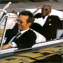

 |
|
Альбом Taj Mahal & the Phantom Blues Band "Shoutin' in Key — Live" дебютировал на #15.
Лидер блюзовой двадцатки "B.B. King and Eric Clapton "Riding With the King" на этой неделе занял 10-ю позицию в общем списке популярных альбомов "Top 200", спустившись с #3, на котором дебютировал.
Временно мы предоставляем возможность послушать из этого альбома песню "10 Long Years" в MP3.